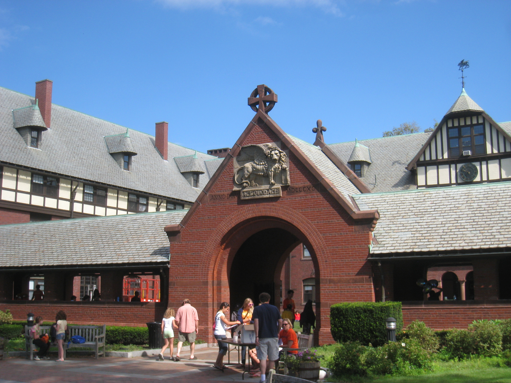

I am delighted that you are interested in St. Marks School and I hope that you benefit from the information and resources provided on our website. St. Marks, founded in 1865, is a college-preparatory boarding and day school, grades nine through twelve. Nestled upon 250 acres in the picturesque suburb of Southborough, Massachusetts, the school is only 25 miles from the abundant cultural and social opportunities in Boston. Hopefully, this website and theVoice of St. Marks will adequately shine a spotlight on both aspects of life at St. Marks, the serious and the fun. Here, you will find much information about the riches of our curriculum, boarding life, our athletic and artistic offerings, and our extracurricular programs. This website also describes how we maintain vibrant connections with the larger world. Why St. Mark's